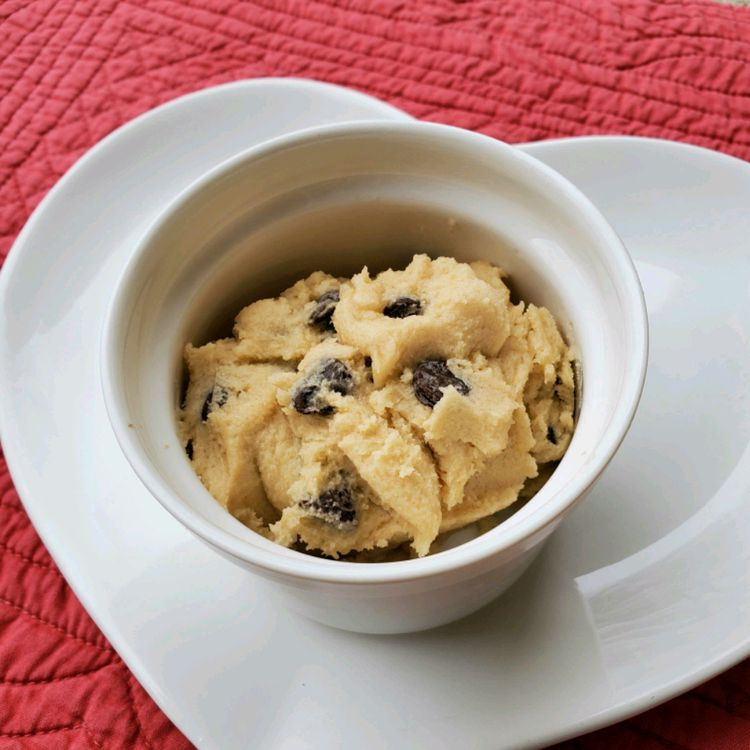

Edible Cookie Dough

Description
Heat treat flour and simply beat together sugar, butter, vanilla extract, and salt. Add flour to form dough and stir in milk to just combine. Finally, fold in milk and mini chocolate chips to complete this dessert!
Ingredients (for 8 servings)
- 1 cup all-purpose flour
- 3/4 cup packed brown sugar
- 1/2 cup butter
- 1 teaspoon vanilla extract
- 1/2 teaspoon salt
- 2 tablespoons milk
- 1/2 cup milk chocolate chips
- 1/2 cup mini chocolate chips
Steps
- Place flour in microwave-safe dish and cook for 1 minute and 15 seconds. Stir every 15 seconds or so and then set aside. This will heat treat the flour so it's safe to use.
- Beat sugar and butter in large bowl until creamy. Beat in vanilla extract and salt. Add the flour that was just heat-treated and mix until dough forms. Stir in milk until dough is just combined. Fold in milk and mini chocolate chips.
- Enjoy your dessert!
Credit for this recipe goes to:
Allrecipes